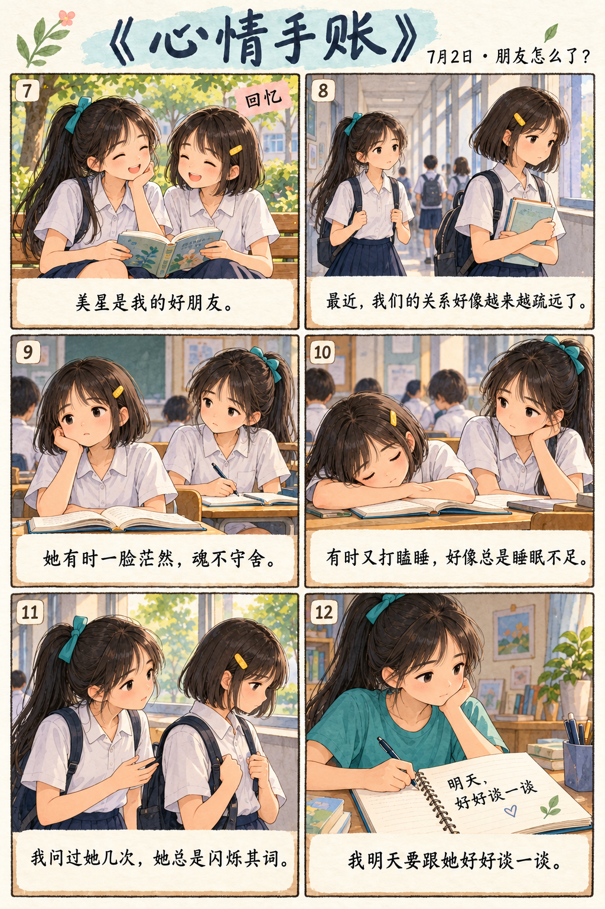
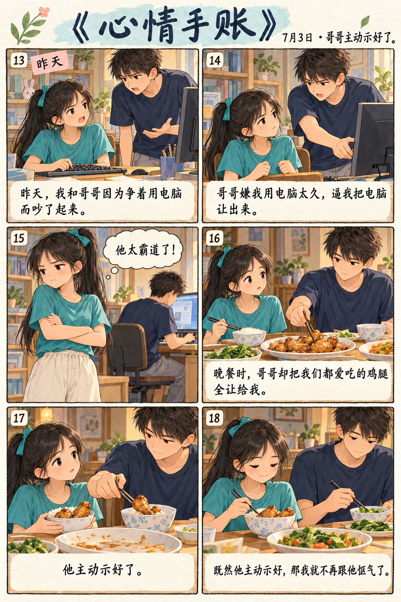
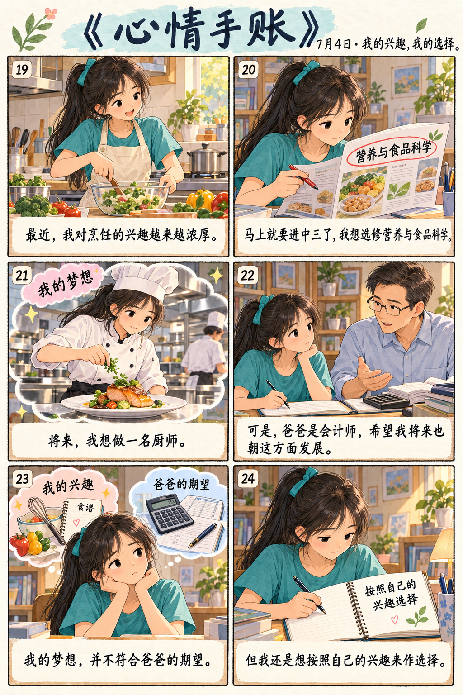

第一则 · 7月1日
我一直对自己的身材不满意，甚至有些自卑。每次看到别人健美的身材，我都非常羡慕。可是，我又无法抗拒零食的诱惑。我要做一个有毅力的人，坚持运动，戒掉爱吃零食的坏习惯。
我一直对自己的身材不满意，甚至有些自卑。每次看到别人健美的身材，我都非常羡慕。可是，我又无法抗拒零食的诱惑。我要做一个有毅力的人，坚持运动，戒掉爱吃零食的坏习惯。

美星是我的好朋友。最近不知怎么的，我们的关系好像越来越疏远了。这几天，我发现她在课堂上要么一脸茫然，魂不守舍；要么打瞌睡，好像是睡眠不足。我问了她几次，她总是闪烁其词。我明天要跟她好好谈一谈。

昨天，我和哥哥因为争着用电脑而吵了起来。哥哥嫌我电脑用得太久，逼我把电脑让出来。他太霸道了！晚餐时，哥哥却把我们都爱吃的鸡腿全让给我。既然他主动示好，那我就不再跟他怄气了。

最近，我对烹饪的兴趣越来越浓厚。马上就要选中三的科目了，我想选修营养与食品科学，将来做一名厨师。可是，爸爸是会计师，他希望我将来也朝这方面发展。尽管我的梦想不符合爸爸的期望，但我还是想按照自己的兴趣来做选择。
